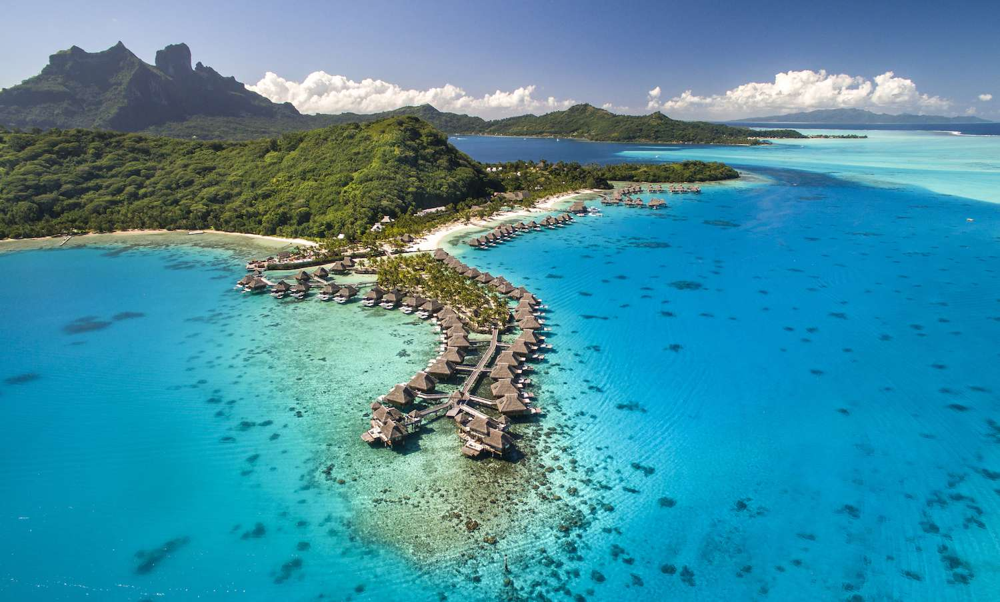

Sumérgete en aguas cristalinas y arenas blancas en este destino de ensueño en el Pacífico Sur. Bora Bora es famosa por sus lujosos bungalows sobre el agua y actividades acuáticas de primer nivel, como el buceo en arrecifes de coral y el avistamiento de tiburones. 
La Gran Manzana te espera con su icónica silueta de rascacielos, teatros de Broadway, museos de renombre mundial y una vibrante escena gastronómica. Explora Central Park, Times Square y el puente de Brooklyn en esta ciudad que nunca duerme.
Con sus pintorescas casas blancas y cúpulas azules sobre acantilados que se elevan sobre el mar Egeo, Santorini es un destino romántico y pintoresco. Disfruta de atardeceres inolvidables, degusta la deliciosa gastronomía local y explora las playas volcánicas.
Sumérgete en una mezcla fascinante de tradición y modernidad en Tokio. Desde los templos antiguos hasta los neones de Shibuya, esta metrópolis ofrece una experiencia única. Explora los jardines imperiales, disfruta de la cocina japonesa y explora la cultura pop.
En el extremo sur de África, Ciudad del Cabo cautiva con su majestuosa belleza natural. Desde la emblemática montaña de la Mesa hasta las playas de arena dorada y los viñedos circundantes, esta ciudad ofrece una mezcla de aventura y relajación.